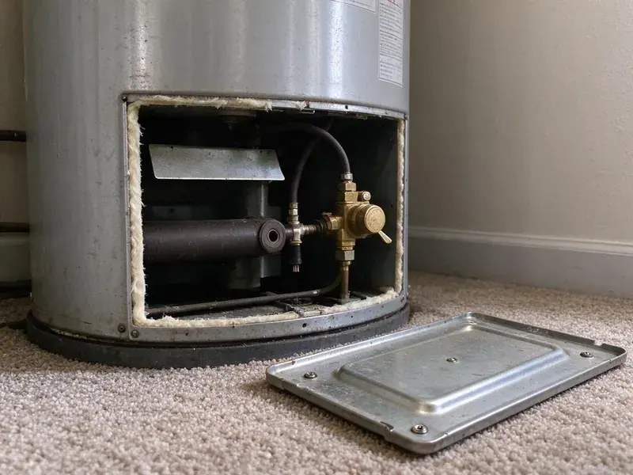

Trenchless Sewer Line Repair in Bettendorf, IA
When sewer line problems strike in Bettendorf, IA, trust KFR Plumbing for efficient trenchless repair methods that protect your yard and landscaping.
- Before & After Video
- Long-Lasting Solutions
- Prompt Camera Inspections
- Certified Iowa Plumbers

No-dig sewer repair that protects your landscaping in Bettendorf, IA.
Contact KFR Plumbing today for a consultation and estimate.
Your Local Source for Trenchless Sewer Line Repair in Bettendorf, IA
KFR Plumbing provides advanced trenchless sewer line repair services across Bettendorf, IA. This approach allows us to fix damaged sewer pipes with minimal digging, preserving your landscape and reducing repair time.
Our expertise includes:
- Detailed Video Pipe Inspection
- Cured-In-Place Pipe Lining
- Epoxy cured-in-place lining and sectional point repair patches

Additional Plumbing Repair Services in Bettendorf, IA
We offer expert plumbing repair services across Bettendorf, IA to stop leaks, clear blockages, and keep every fixture working the way it should.


Customers
Why Choose KFR Plumbing for Trenchless Sewer Line Repair in Bettendorf, IA?
This method is especially effective for Bettendorf homes where preserving mature landscaping or paved areas is a priority.
- Long-Life Materials, Liners and HDPE pipe resist roots and corrosion for many years.
- Durable Fix, The new pipes or liners installed are often more resistant to common issues like root intrusion and corrosion.
- Less Restoration, Small access points mean less concrete cutting and landscape replacement.
Citywide Coverage
Homes, rentals and small commercial buildings anywhere in Bettendorf can benefit from trenchless repair. Our equipment fits tight lots, side yards and alley access points.
Experienced Team
Our plumbers are highly trained and experienced in all trenchless sewer line repair techniques, regularly updating their skills with the latest industry advances. They are experts in diagnosing issues and applying the most effective trenchless solutions.
Safety-First Approach
KFR Plumbing puts first safety for both our crew and your property during trenchless sewer line repair. We follow strict protocols and use modern equipment to complete every job safely and to the highest industry standards, preventing future issues.
Trusted Certified Bettendorf Plumbing Services Professionals
At KFR Plumbing, we take pride in providing certified plumbing services throughout Bettendorf, IA. Backed by leading industry credentials, our experienced plumbers combine technical skill with genuine customer care. Whether it is repair, installation, or maintenance, we follow strict safety and quality standards to deliver long-lasting results you can trust.
Call Us Now PHCC Plumbing Contractor Recognition
PHCC Plumbing Contractor Recognition Better Business Bureau (BBB) Accreditation
Better Business Bureau (BBB) Accreditation Angi Certified Pro
Angi Certified Pro ISO 9001 Quality Management Certification
ISO 9001 Quality Management CertificationDependable Trenchless Sewer Line Repair Services in Bettendorf, IA
Cast Iron Sewer Line Repair in Bettendorf, IA
Cast iron drains and sewer lines corrode from the inside, leaving rough scale, cracks and channel rot along the bottom of the pipe. We descale the pipe with chain knockers or cutters, then line it to restore a smooth, sealed interior. This is particularly useful for cast iron running under slabs where excavation is costly. Lining can add many years of service.

Emergency Trenchless Sewer Repair in Bettendorf
Sewer line emergencies, such as major backups or collapses, require immediate attention. KFR Plumbing offers emergency trenchless sewer repair services in Bettendorf to quickly address critical issues. While trenchless methods generally take more planning, in certain emergency situations they can be used to limit damage and restore function faster than traditional excavation, especially when protecting the landscape is a priority.
Perma-Liner and NuFlow Trenchless Technologies in Bettendorf
KFR Plumbing uses proven trenchless technologies from trusted brands like Perma-Liner and NuFlow. These systems are known for their durability, effectiveness and adherence to plumbing standards. Using these materials and equipment means your trenchless sewer line repair in Bettendorf is not only minimally invasive but also a high-quality, long-lasting solution, backed by manufacturer warranties.
Commercial Trenchless Sewer Repair in Bettendorf, IA
KFR Plumbing offers trenchless sewer line repair for commercial properties in Bettendorf, IA. Businesses often cannot afford long downtime or disruption, making trenchless solutions ideal for maintaining operations. We handle everything from restaurants to retail spaces, limiting impact on your business and customers while staying code compliant.
Sewer Camera Inspections for Trenchless Repair in Bettendorf
Before any trenchless repair, a detailed sewer camera inspection is crucial. Our high-definition cameras travel through your sewer lines, providing real-time video of the pipe's interior. This allows us to accurately diagnose the problem, identify its exact location and determine the most appropriate trenchless method, whether it is pipe bursting or CIPP. This diagnostic step makes for a precise and lasting repair in Bettendorf.
Orangeburg and Clay Pipe Repair in Bettendorf
Some older homes still have Orangeburg fiber pipe or vitrified clay sewer laterals. Orangeburg flattens and blisters over time, while clay cracks and separates at joints. Pipe bursting is often the best option for Orangeburg, and lining can work well for clay that still holds its shape. We determine the material on camera before recommending a method.
Commercial Trenchless Sewer Line Repair in Bettendorf, IA
For businesses in Bettendorf, IA, minimizing disruption is key. Our commercial trenchless sewer line repair services offer a discreet and efficient way to address sewer issues without impacting business operations or customer access. Whether it is a restaurant, office building or retail space, we provide robust trenchless solutions that restore sewer function quickly, so your business can keep operating smoothly.

Cured-In-Place Pipe Lining in Bettendorf
Cured-in-place lining creates a new pipe inside the old one. We clean the line, then pull or invert a resin-saturated liner into place and cure it with hot water, steam or UV light. The result is a seamless, jointless pipe that roots cannot get into. Lining works well for cracked or root-intruded lines that still hold their shape.
Trenchless Sewer Line Repair Near Me in Bettendorf, IA
Our team is always ready to deploy to your location, offering the latest in trenchless technology. We understand the local infrastructure and common issues affecting sewer lines in Bettendorf, ensuring a targeted and effective repair every time.
Our team understands the plumbing infrastructure and environmental factors in Bettendorf, allowing us to deliver well-matched trenchless sewer repair solutions right in your neighborhood. Trust the local professionals who know your area best for reliable service.
KFR Plumbing at a Glance
- Licensed and insured plumbers serving Bettendorf, IA
- Same-day appointments and 24/7 emergency response
- Clear written estimates, no hidden fees
- 4.8-star rated by 620+ Iowa customers
Bettendorf Map
Bettendorf Information
- Population
- 39,858
- Area codes
- Local
- Service area
- Bettendorf and communities within 40 miles
- Nearby
- Davenport, Iowa City, Dubuque, Marion
Basements are standard in most Iowa homes, so sump pumps, floor drains, and foundation seepage are common service concerns. For homes in Bettendorf, IA, trenchless sewer line repair protects underground pipes from shifting ground and saves established landscaping from messy excavation.
Expert Services
Trust our professionals for reliable KFR Plumbing solutions in Bettendorf, IA.
Our Specialized Plumbing Services in Bettendorf, IA
At KFR Plumbing, we provide a complete range of plumbing services across Bettendorf, IA. From leak detection to full system installations, our team ensures fast, precise, and affordable service for both residential and commercial properties. Explore our core services below:


How Our Trenchless Sewer Line Repair Process Works in Bettendorf, IA
Here is how we take your sewer line from broken to like new without a deep trench.
Request a Quote
Call (515) 308-3583 to schedule a sewer camera inspection. We record the video and mark any problem spots from the surface.
Review Repair Options
We walk you through the footage and explain whether lining, point repair or bursting fits your line. You receive a written price for each suitable option.
Repair and Verify
We clean and prep the line, complete the trenchless repair and restore any access points. A final camera inspection confirms the new pipe is sound.
Frequently Asked Questions About Trenchless Sewer Line Repair in Bettendorf
The cost for trenchless sewer line repair in Bettendorf, IA can range from $80 to $250 per foot, depending on the method, pipe diameter and scope of the job. For a typical 50-foot residential line, you might expect to pay between $4,000 and $12,500. This estimate generally includes labor, materials and equipment.
Lines that are cracked, root-infested or corroded but still hold their shape are usually good candidates for lining. Collapsed or badly offset lines may need pipe bursting or a spot excavation.
Absolutely not. Trenchless sewer line repair requires specialized equipment, extensive training and adherence to strict plumbing codes. It is a complex job best left to licensed and experienced professionals like KFR Plumbing for safety and proper functionality.
A properly installed liner has no joints for roots to enter, so root intrusion is practically eliminated in the lined section.
Many residential lining and point repair jobs are completed in one day. Pipe bursting or longer lines may take one to two days to finish.
Most trenchless sewer line repairs can be completed in one to three days, much faster than traditional excavation methods, which can take a week or more. The exact timeline depends on the length of the pipe, the severity of the damage and the specific trenchless technique used.
Most trenchless sewer line repairs can be completed in one to three days, depending on the scope and method. This is much faster than traditional excavation methods, which can often take a week or more plus additional time for property restoration.
KFR Plumbing offers solid warranties on our trenchless sewer line repairs, typically covering materials and workmanship for several years. Full warranty details will be provided with your estimate, giving you peace of mind in our durable solutions.
What People Are Saying About Our Plumbing Experts?

James P.
Our commercial plumbing system had a leak under the sink, and KFR Plumbing handled it professionally. The plumbers arrived quickly and restored everything without disruption to our customers.
Commercial Plumbing · Iowa City, IA
Sofia M.
Two new toilets installed in one visit, no mess left behind, and the tech even adjusted a faucet he noticed was dripping. Fair pricing and really friendly.
Toilet Installation · Cedar Rapids, IA
Daniel K.
A pipe burst at 11 pm and they actually answered. The plumber showed up within the hour, shut everything down, and had us back to normal the next morning. Could not ask for more.
Emergency Plumbing · Davenport, IA
Patricia H.
We had a slab leak that two other companies could not find. KFR Plumbing located it in under an hour, explained our options, and the price matched the quote to the dollar.
Slab Leak Repair · Marion, IA
Mark T.
When our office needed drain cleaning, KFR Plumbing provided quick, reliable service. The plumber arrived on time and made sure every drain flowed perfectly before leaving. Very satisfied.
Drain Cleaning · Marion, IALaura S.
I scheduled a water heater replacement, and the team made the process smooth and affordable. The new unit works perfectly, and they cleaned up after completing the job.
Water Heater Replacement · Cedar Rapids, IA